Why Locals Call Us the Best Juice Shop in Usilampatti
A glass of juice should taste like the fruit it came from. That sounds obvious, but many places add too much sugar, ice or flavoured syrup. At JM Snacks, every juice is pressed or blended fresh when you order. That simple promise is the main reason customers call us the best juice shop in Usilampatti.
We pick our fruit from local markets every morning and choose only ripe, sweet produce. Watermelon, mosambi, pomegranate, mango, pineapple, grapes and orange rotate with the season, and lime is always available. We use filtered water and hygienic ice, and the juicer is cleaned after every few orders.
Ask for no sugar, less sugar, no ice or extra salt and pepper – we will make it exactly the way you like. A good juice shop listens, and we are proud to be that kind of place.
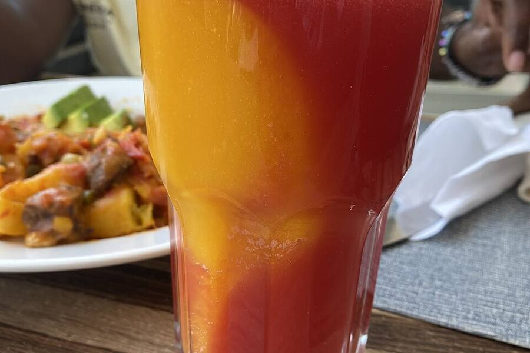
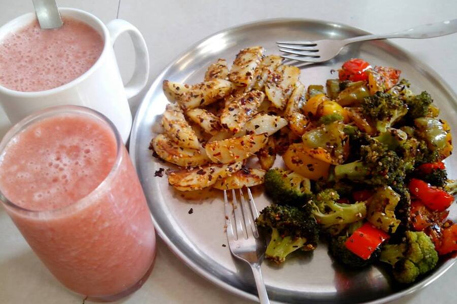
A Fresh Juice Shop in Usilampatti You Can Trust
There is a difference between a juice stall and a fresh juice shop in Usilampatti that takes quality seriously. We never prepare juice in advance and leave it sitting in jugs. We never mix old fruit with new. And we never water down the glass to cut costs.
This approach has earned us loyal customers – office workers who stop by for a mosambi juice every morning, mothers who buy pomegranate juice for their children and elders who prefer a plain lime juice without sugar. For all of them, we are the fresh juice shop in Usilampatti they trust.
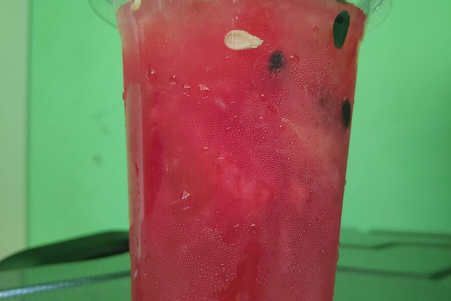
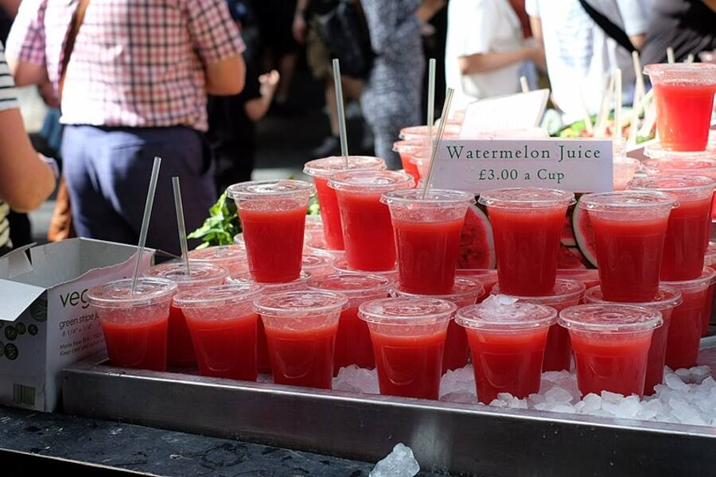
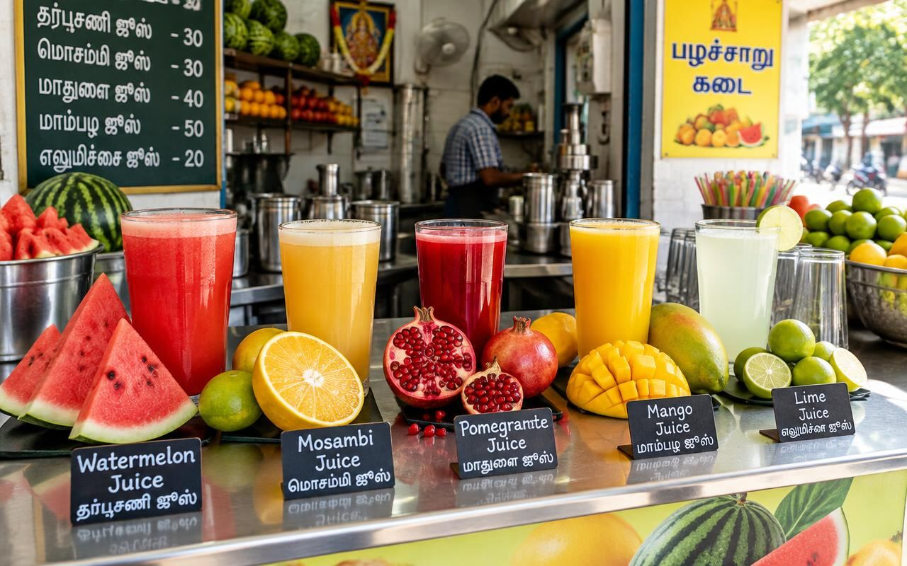
Mojitos, Coolers and Koli Soda
Not every drink has to be a juice. Our virgin mojitos – mint, blue curacao, strawberry and lemon – are fizzy, cool and perfect after spicy chaat. We also serve Koli Soda, the classic marble soda that so many of us grew up with, in plain, lemon and masala versions.
These drinks are part of our ₹99 combos too. Try the Mojito + Chicken Momos + Cool Drink combo, or explore all the combos on our home page.
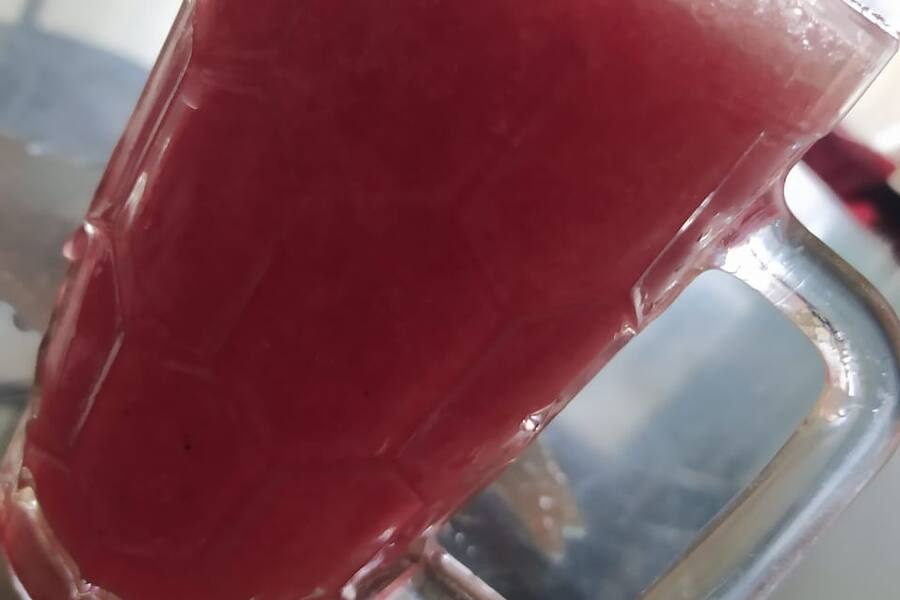
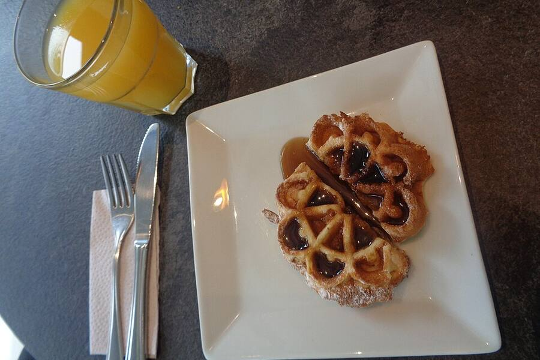
Thick Shakes from a Popular Milkshake Shop in Usilampatti
Juice not filling enough? Our shakes are made with chilled milk and real ice cream. Mango, chocolate, strawberry, Oreo and butterscotch are customer favourites, and many people now see us as a reliable milkshake shop in Usilampatti as well as a juice counter.
For the full dessert experience – including royal falooda and sundaes – visit our ice cream page. Our neighbours who enjoy a shake after college often say we are their favourite milkshake shop in Usilampatti.
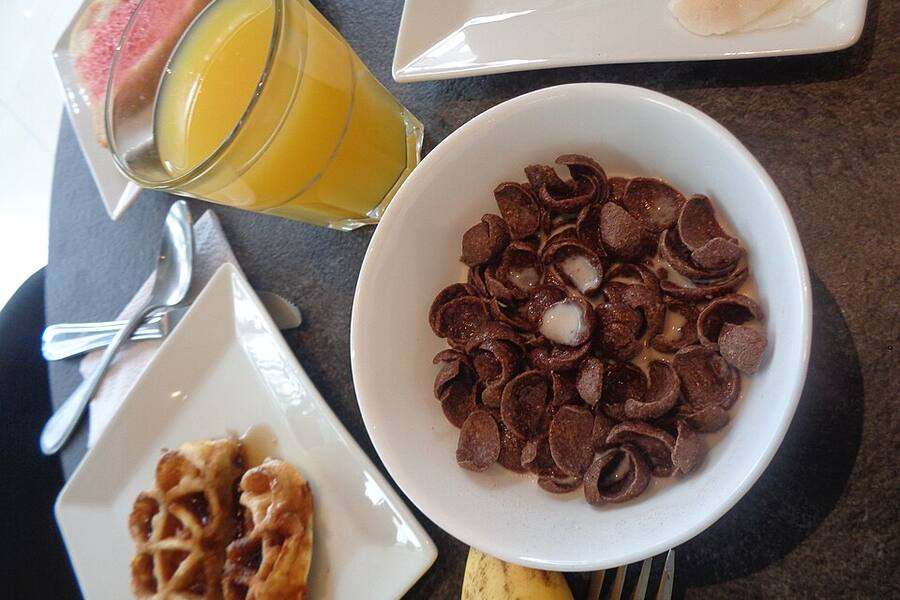
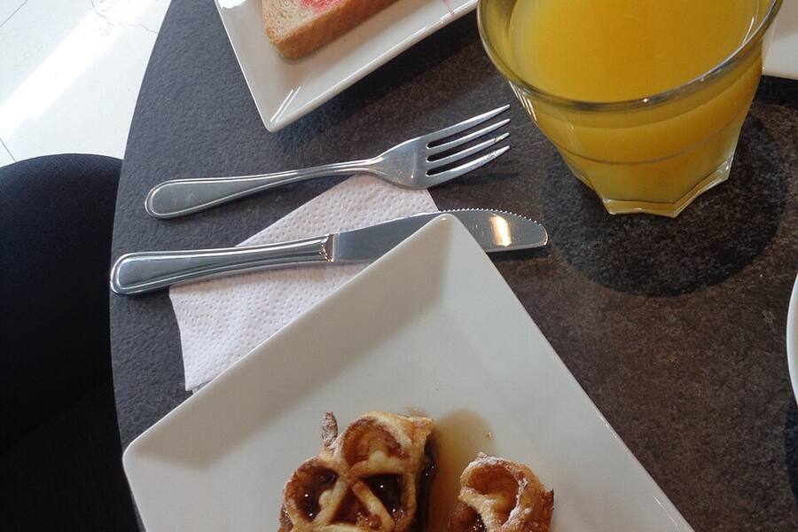
Hygiene at the Best Juice Shop in Usilampatti
Cleanliness is non-negotiable. Fruits are washed in clean water, knives and boards are kept separate for fruit, glasses are washed in hot water and the ice we use is made from filtered water. We follow guidance from FSSAI and Eat Right India.
Curious about the fruit itself? Read about the history of juice. We believe that if you are going to drink something for your health, it should be made with care – the standard you can expect at the best juice shop in Usilampatti.
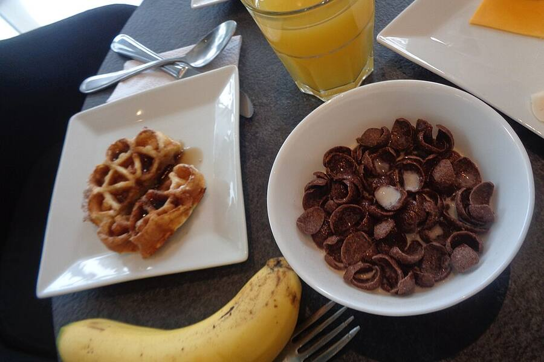
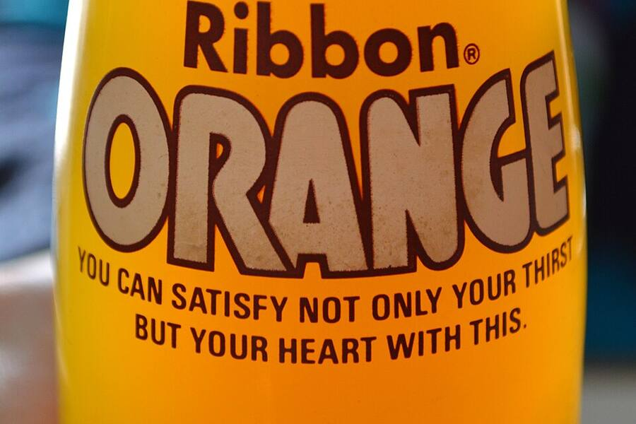
Visit the Best Juice Shop in Usilampatti
We are on T B Road, near Saami Theatre. Pair your juice with pani puri or a sandwich from our fast food menu. Call +91 88709 51989 or see our contact page for directions and bulk orders.
Next time the afternoon sun gets too hot, you know where to go – JM Snacks, the best juice shop in Usilampatti, with a cold glass waiting just for you. Thank you for choosing the best juice shop in Usilampatti, and see you soon at the best juice shop in Usilampatti.
Photo Gallery
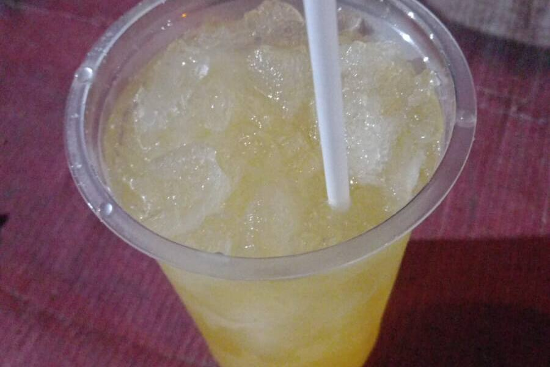
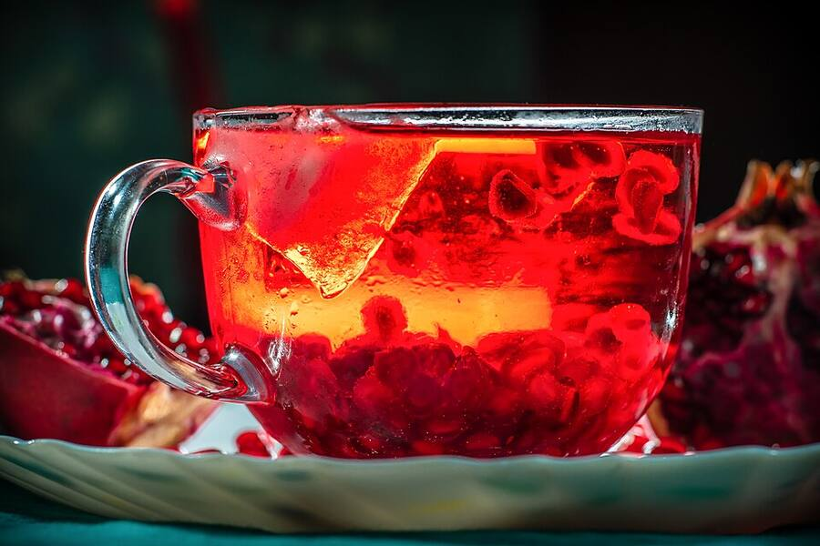
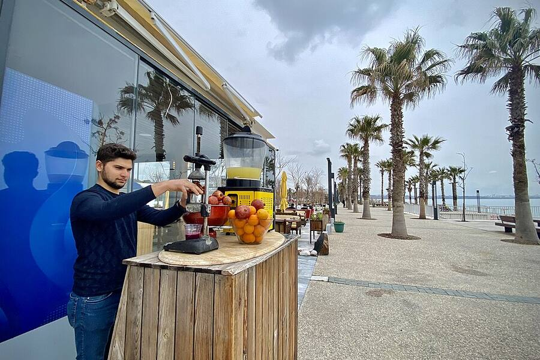
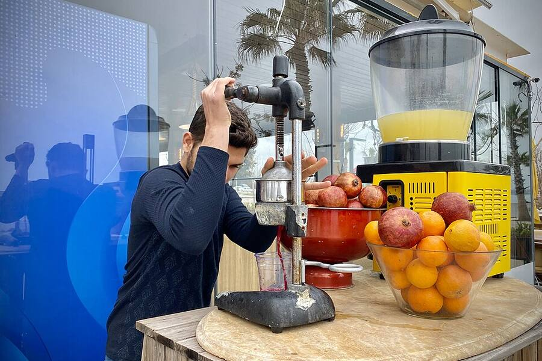
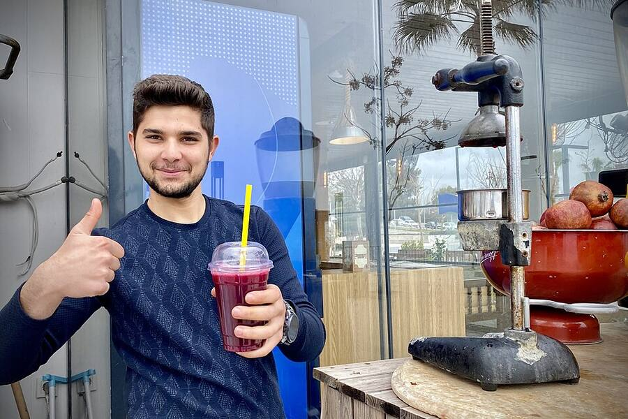
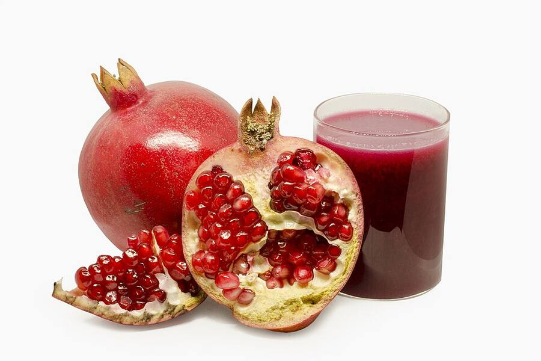
Frequently Asked Questions
Which is the best juice shop in Usilampatti?
JM Snacks on T B Road is known as the best juice shop in Usilampatti for juice made fresh to order.
Is your juice made fresh?
Yes. Every glass is made only after you order.
Can I get juice without sugar?
Yes, we can make any juice without sugar or ice.
Do you sell Koli Soda?
Yes – plain, lemon and masala Koli Soda.
Do you also have milkshakes?
Yes – mango, chocolate, strawberry and Oreo shakes made with real ice cream.